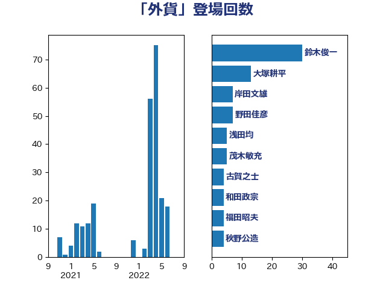

単語「外貨」

| 鈴木俊一 | 自由民主党 | 30 回 |
| 大塚耕平 | 国民民主党 | 13 回 |
| 岸田文雄 | 自由民主党 | 7 回 |
| 野田佳彦 | 立憲民主党 | 7 回 |
| 浅田均 | 日本維新の会 | 5 回 |
| 茂木敏充 | 自由民主党 | 5 回 |
| 古賀之士 | 立憲民主党 | 4 回 |
| 和田政宗 | 自由民主党 | 4 回 |
| 福田昭夫 | 立憲民主党 | 4 回 |
| 秋野公造 | 公明党 | 4 回 |
| 鈴木敦 | 国民民主党 | 4 回 |
| 麻生太郎 | 自由民主党 | 4 回 |
| 三浦信祐 | 公明党 | 3 回 |
| 横山信一 | 公明党 | 3 回 |
| 江田憲司 | 立憲民主党 | 3 回 |
| 中川宏昌 | 公明党 | 2 回 |
| 吉田統彦 | 立憲民主党 | 2 回 |
| 吉良州司 | 無所属 | 2 回 |
| 有村治子 | 自由民主党 | 2 回 |
| 田中健 | 国民民主党 | 2 回 |
| 田村貴昭 | 日本共産党 | 2 回 |
| 神田憲次 | 自由民主党 | 2 回 |
| 蓮舫 | 立憲民主党 | 2 回 |
| 赤木正幸 | 日本維新の会 | 2 回 |
| 野上浩太郎 | 自由民主党 | 2 回 |
| 高野光二郎 | 自由民主党 | 2 回 |
| たがや亮 | れいわ新選組 | 1 回 |
| 下条みつ | 立憲民主党 | 1 回 |
| 佐藤正久 | 自由民主党 | 1 回 |
| 勝部賢志 | 立憲民主党 | 1 回 |
| 城内実 | 自由民主党 | 1 回 |
| 宮下一郎 | 自由民主党 | 1 回 |
| 小田原潔 | 自由民主党 | 1 回 |
| 岩田和親 | 自由民主党 | 1 回 |
| 後藤茂之 | 自由民主党 | 1 回 |
| 徳永久志 | 立憲民主党 | 1 回 |
| 斎藤アレックス | 国民民主党 | 1 回 |
| 末松義規 | 立憲民主党 | 1 回 |
| 杉久武 | 公明党 | 1 回 |
| 梅谷守 | 立憲民主党 | 1 回 |
| 梶山弘志 | 自由民主党 | 1 回 |
| 江藤拓 | 自由民主党 | 1 回 |
| 河野義博 | 公明党 | 1 回 |
| 熊谷裕人 | 立憲民主党 | 1 回 |
| 玉木雄一郎 | 国民民主党 | 1 回 |
| 福田達夫 | 自由民主党 | 1 回 |
| 篠原豪 | 立憲民主党 | 1 回 |
| 美延映夫 | 日本維新の会 | 1 回 |
| 舞立昇治 | 自由民主党 | 1 回 |
| 荒井優 | 立憲民主党 | 1 回 |
| 階猛 | 立憲民主党 | 1 回 |
| 音喜多駿 | 日本維新の会 | 1 回 |
| 須藤元気 | 無所属 | 1 回 |